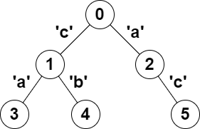

| Category | Difficulty | Likes | Dislikes |
|---|---|---|---|
| Algorithms | Hard | 431 | 15 |
dynamic-programming | bit-manipulation | tree | depth-first-search | bitmask
weride | uber | thoughtspot | tiktok
You are given a tree (i.e. a connected, undirected graph that has no cycles) rooted at node 0 consisting of n nodes numbered from 0 to n - 1. The tree is represented by a 0-indexed array parent of size n, where parent[i] is the parent of node i. Since node 0 is the root, parent[0] == -1.
You are also given a string s of length n, where s[i] is the character assigned to the edge between i and parent[i]. s[0] can be ignored.
Return the number of pairs of nodes (u, v) such that u < v and the characters assigned to edges on the path from u to v can be rearranged to form a palindrome.
A string is a palindrome when it reads the same backwards as forwards.
Example 1:

Input: parent = [-1,0,0,1,1,2], s = "acaabc"
Output: 8
Explanation: The valid pairs are:
- All the pairs (0,1), (0,2), (1,3), (1,4) and (2,5) result in one character which is always a palindrome.
- The pair (2,3) result in the string "aca" which is a palindrome.
- The pair (1,5) result in the string "cac" which is a palindrome.
- The pair (3,5) result in the string "acac" which can be rearranged into the palindrome "acca".Example 2:
Input: parent = [-1,0,0,0,0], s = "aaaaa"
Output: 10
Explanation: Any pair of nodes (u,v) where u < v is valid.
Constraints:
n == parent.length == s.length1 <= n <= 1050 <= parent[i] <= n - 1 for all i >= 1parent[0] == -1parent represents a valid tree.s consists of only lowercase English letters.